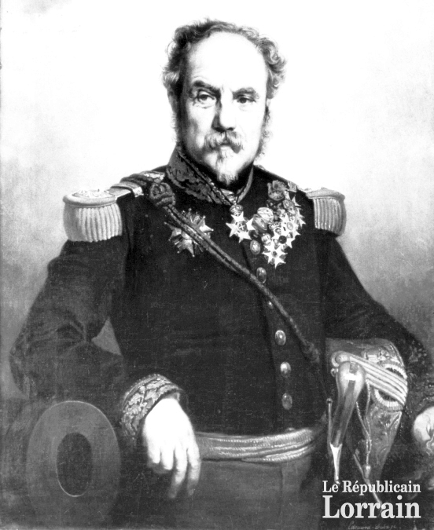
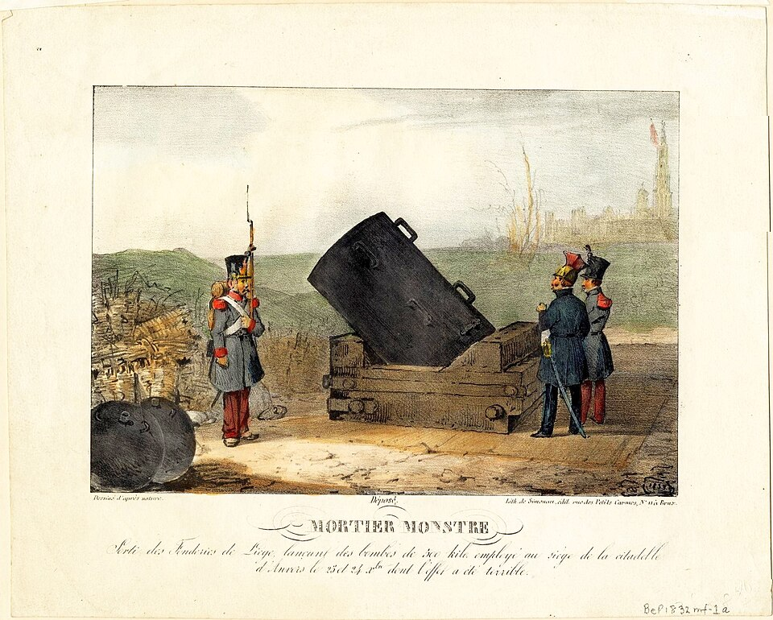
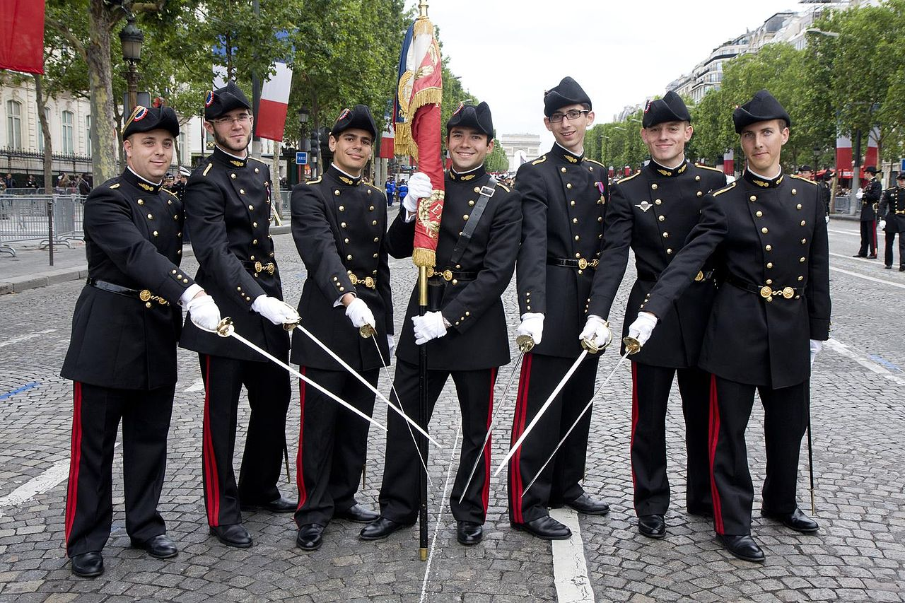
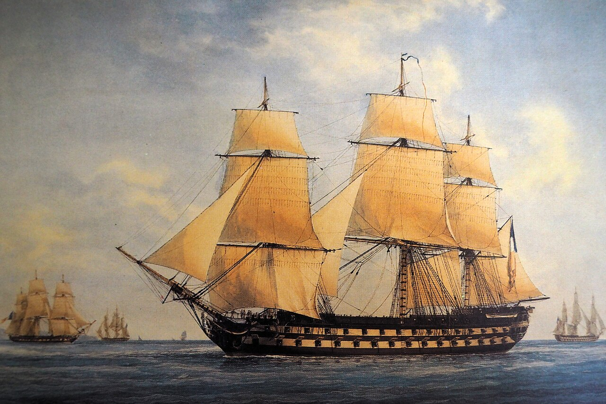
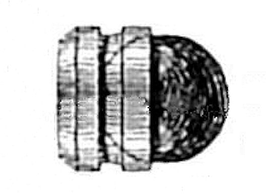
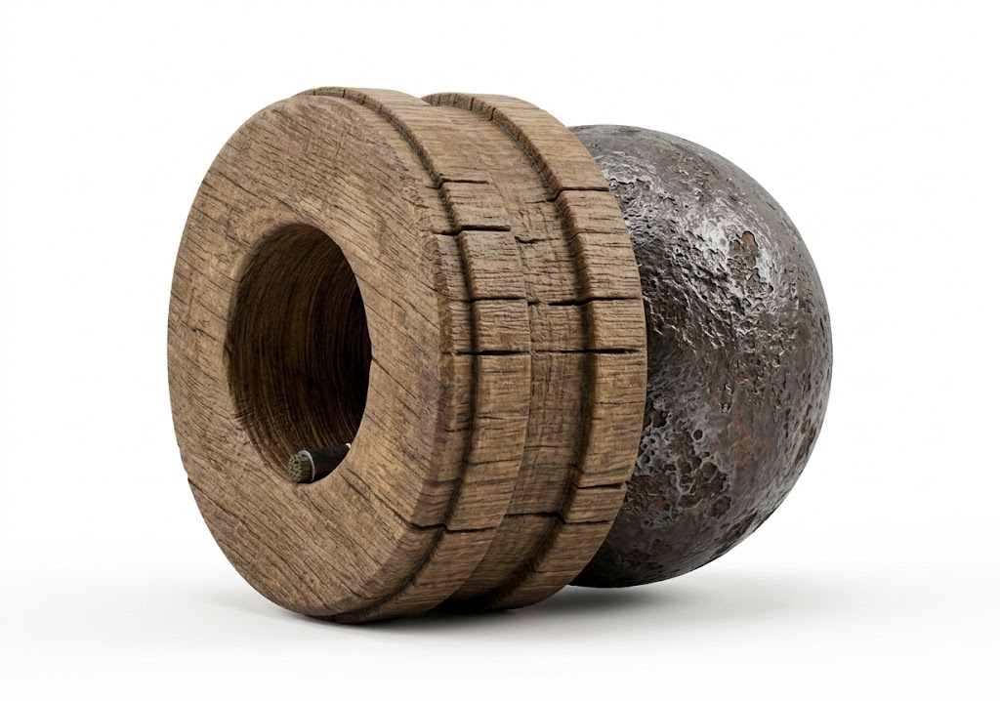
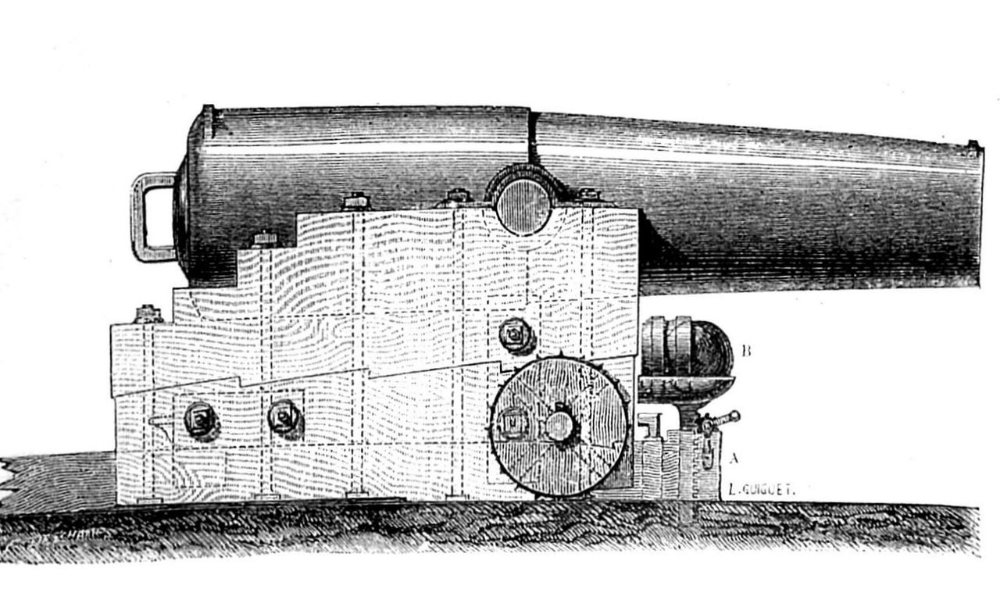
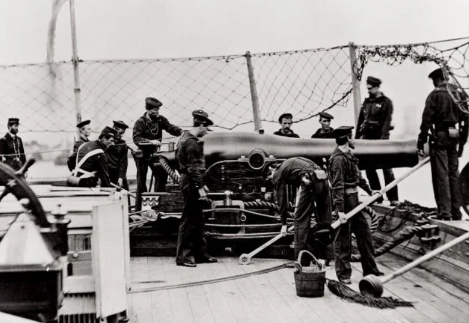
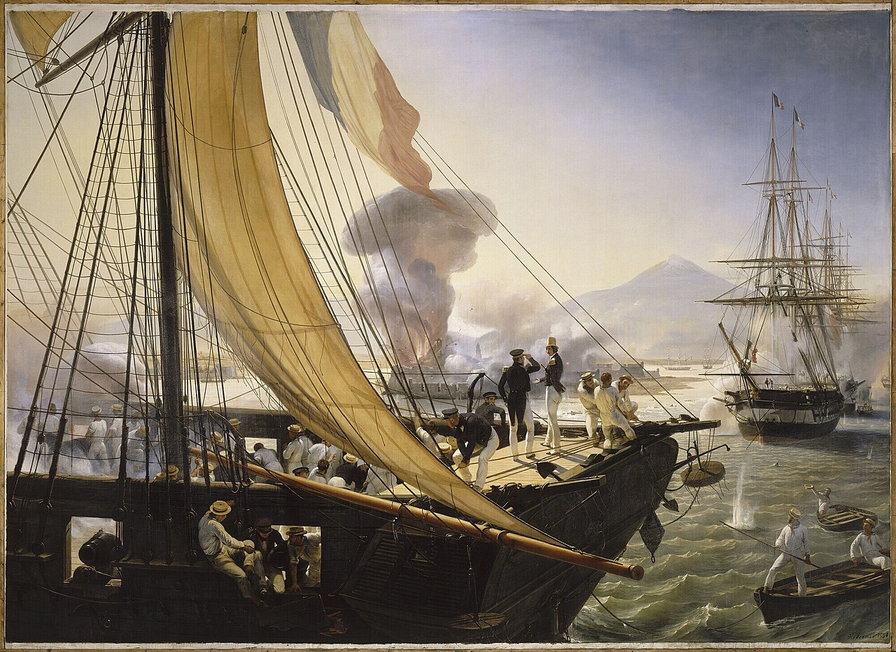
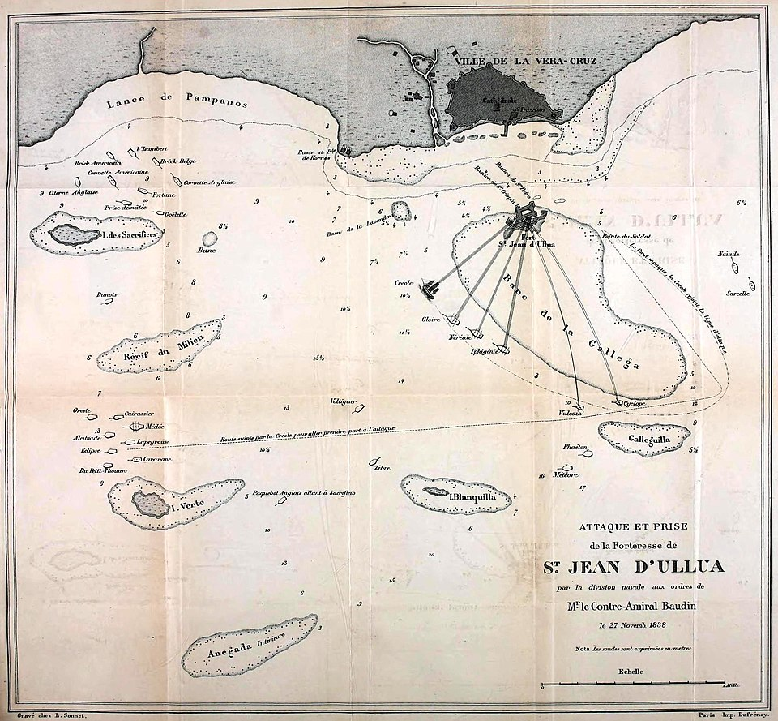

보스포러스 해협 이야기 (5) - 모든 것을 바꾼 나무틀
게시: 2026-03-05T06:30:17+09:00
프랑스 혁명 발발 4년째이던 1783년 생인 펙상(Henri-Joseph Paixhans)은 프랑스 혁명의 수혜자라고 할 수 있었습니다. 그는 자신이 태어난 해에 프랑스 국민공회의 지원으로 수학자 가스파르 몽쥬(Gaspard Monge)가 만들었다가 나폴레옹이 일종의 사관학교로 변모시킨 에콜 폴리테크닉(École polytechnique)에서 교육을 받고 포병 장교가 될 수 있었기 때문이었습니다. 평범한 상인의 아들로 태어났던 펙상은 혁명이 아니었다면 결코 장교 계급장을 달지 못했을 것입니다. 그는 자신을 포병 장교로 만들어준 나폴레옹을 따라 아우스테를리츠, 예나, 아일라우 등 대부분의 주요 전투에 참전했고, 1812년 뼈아픈 러시아 원정에 참여하여 보로디노 전투에서도 싸웠습니다. 워털루 전투에서도 나폴레옹 편에서 싸웠던 그는 부르봉 왕가가 돌아오자 무보직으로 돌려져 한동안 어렵게 살아야 했습니다. 그는 10년 뒤인 1825년에야 중령 계급으로 복직할 수 있었습니다.

(오늘 이야기의 주인공 앙리-조제프 펙상의 초상화입니다. 육군 중장까지 진급했으나, 정작 가장 많은 업적은 해군 쪽에 남겼습니다.)

(펙상은 정말 대포와 포탄을 사랑하여, 이런 '괴물 박격포'(Mortier monstre)도 발명했습니다. 1832년 그림입니다.)

(폴리테크닉은 나폴레옹 때의 전통이 살아있어서 저렇게 제복을 입습니다. 이건 프랑스의 국경일인 바스티유(Bastille)의 날 기념 행진에 참석한 폴리테크닉 학생들입니다. 기본적으로 생도들은 모두 국방부에서 급여를 받는 생도 신분이지만 졸업생 모두가 군 장교가 되지는 않는 모양입니다.) 그런데 1825년에 그가 복직할 수 있었던 이유는 그 사이에 부르봉 왕가가 너그러워졌기 떄문만은 아니었습니다. 그는 정말 대포를 사랑했는지 무보직 상태에서도 계속 대포에 대한 연구를 계속 했었고, 해군 함포 및 전술에 대한 논문을 두어 편 쓰기도 했습니다. 그런 연구의 결실은 1822년 경에 나왔습니다. 그가 계속 연구해오던, 폭발탄을 박격포에서 포물선 탄도로 쏘는 것이 아니라 대포(cannon)에서 직사로 쏠 수 있는 대포를 개발한 것입니다. 당연히 개인에 불과했던 그는 자신의 구상에 따른 시제품을 직접 만들지는 못했으므로, 그는 이걸 프랑스 해군성에 제출했는데, 해군성에서도 이를 무척 그럴싸하게 생각하여 2문의 시제품 대포를 만들게 했고, 거의 2년이 지난 뒤인 1824년 몇 차례의 테스트를 수행했습니다. 해군성에는 이 신형 대포에 꽤 열의를 보여서, 퇴역시키려던 80문짜리 전열함 파시피카퇴르(Pacificateur, 영어로 하면 Peacemaker)를 표적함으로 제공했습니다. 테스트 결과는 프랑스 해군성의 입을 떡 벌어지게 만들었습니다. 나무로 만들어진 당시의 군함들에게, 발사된 뒤 적함의 함체에 박힌 뒤 폭발하는 펙상 포의 폭발탄은 그냥 함체에 구멍만 뚫던 기존 구형탄(roundshot)과는 차원이 다른 파괴력을 보여주었던 것입니다. 피카퇴르는 짧은 포격을 받았을 뿐인데도 빠르게 파괴된 뒤 아예 침몰해버렸습니다. 기존 구형탄에서는 있을 수 없는 성과였습니다.

(파시피카퇴르는 '해군의 보방(Vauban)'이라고 불리던 프랑스의 유명 조선기술자 사네(Jacques-Noël Sané)가 설계한 뷔생토르(Bucentaure)급 전열함으로서, 1811년 네덜란드 안트베르펜(Antwerp)에서 진수되어 1814년 취역했습니다. 그러나 이미 나폴레옹 제국은 명운이 기운 뒤였으므로 그냥 그 자리에 앉아 조금씩 썩어가다 18124년 펙상 포의 표적함 역할을 한 것이 거의 유일한 이력입니다. 이 그림은 파시피카퇴르는 아니고 동급의 자매함인 뤼뷔스트(le Rubuste) 호입니다.) 사람들은 자연스럽게 이 신형 대포를 펙상(Paixhans) 포라고 부르기 시작했습니다. 펙상포는 기술적으로 어떻게 달랐기에 폭발탄을 대포에서 사용할 수 있게 된 것일까요? 핵심은 포탄에 나무로 만든 틀인 사보(sabot, 보통 이탈피 (離脫皮), 혹은 송탄통 (送彈筒)이라고 번역)를 덧대어 단 것이었습니다. 이 사보는 둥글고 납작한 나무 받침대인데, 도우넛처럼 구멍이 뚫려 있어 둥근 폭발탄이 그 속에 쏙 끼워지게 되어 있었습니다. 이렇게 사보를 붙임으로써 기존 대포에서는 폭발탄을 쓰지 못했던 문제가 일괄적으로 해결되었숩니다. 1) 당시 대포 포강와 폭발탄 직경 사이의 유격(windage)이 심하여 긴 포신 속에서 폭발탄이 포강에 부딪혀 깨지는 문제 : 나무를 깎아 만든 사보가 포강과의 충돌에 의한 충격을 흡수하여 속이 빈 폭발탄을 보호했습니다. 2) 도화선에 미리 붙을 붙여야 하는 문제 : 도우넛 형태의 사보의 구멍에 포탄을 쏙 넣어서 묶되, 그 포탄의 심지가 포구 쪽의 반대, 즉 장약이 있는 쪽을 향하게 고정하여, 포를 발사할 때 장약의 폭발이 포탄의 심지에 자연스럽게 불을 붙이도록 했습니다. 3) 포탄 비행시 도화선이 꺼지는 문제 : 도화선 대신 짧은 나무 마개 속에 가는 구멍을 파고 느리게 타는 짧은 도화선을 넣은 심지를 붙여서 비행시의 거센 바람에도 불이 꺼지지 않도록 했습니다.

(결국 펙상포의 혁신은 대포 자체가 아니라 포탄의 설계에 있었던 것입니다. 그것도 뭐 대단한 과학적 혹은 기술적 돌파구가 있었던 것이 아니라, 구멍이 뚫린 도우넛 형태의 사보를 포탄에 부착한다는 간단한 아이디어가 큰 차이를 낸 것입니다.)

(윗 그림만 보고는 펙상 포탄의 모습을 머릿속으로 상상하기가 쉽지 않아 Gemini에게 3차원으로 그리게 했더니, 이렇게 그려주네요. 나름 잘 표현했다고 생각합니다.) 이렇게만 보면 포탄만 새로 만들면 되고 대포는 예전 것을 그대로 써도 될 것 같지만, 실제로는 폭발탄이 제대로 위력을 발휘하려면 기존 구형탄에 비해 구경도 더 커야 했고, 또 쇠로 된 구형탄보다는 상대적으로 더 가벼운 폭발탄을 더 힘차게 날려보내기 위해 대포 약실에도 장약을 더 많이 쟁여넣어야 했으므로, 펙상 포탄을 쏘는 대포에도 약실을 더 두껍고 튼튼하게 만드는 등의 약간의 개량이 있어야 했습니다.

(폭발탄을 쏘는 펙상포는 흔히 근대적인 후장식 대포라고 착각하기 쉽지만 실은 전장식 대포로서, 약실 부분이 더 두껍다는 것 외에는 사실 기존 대포와 구조 등에 있어서 크게 다른 부분은 없습니다.)

(사진은 펙상포를 약간 더 발전시킨 미국의 달그렌(Dahlgren) 포입니다. 여전히 포구를 통해 장전하는 전장식 대포입니다.) 1827년부터 프랑스 해군은 펙상포를 주문하여 신규 건조되는 군함에 장착하기 시작했는데, 한꺼번에 모든 군함들의 포를 모두 다 펙상포로 교체하지는 않았습니다. 가령 74문 이상의 함포가 장착되는 전열함에는 그 중 4문의 포를, 그리고 32문 정도의 포를 장착하는 프리깃함에는 그 중 2문의 포를 펙상포로 교체했습니다. 지금도 그렇지만, 테스트 상으로 뛰어난 성과를 냈다고 해서 실전에서도 아무 문제없이 좋은 결과를 낸다는 보장은 없었으니까요. 문제는 그 실전인데, 예상보다 실전에서 그 실제 효과를 입증할 기회가 빨리 왔습니다. 영어로는 패스트리 전쟁 (Pastry War), 불어로는 파티쉐리 전쟁 (Guerre des Pâtisseries)라고 불리던 1838년 멕시코-프랑스 전쟁이었습니다. 멕시코의 정정 불안으로 인해 멕시코에 살던 외국인들이 약탈 등의 피해를 입었는데, 그 중에서도 멕시코시티 인근에서 빵집을 하던 르몽텔(Remontel)이라는 파티쉐리가 본국에 피해 보상을 호소하면서 벌어진 이 전쟁에서, 프랑스 해군은 전열함도 없이 그저 4척의 프리깃함과 2척의 코르벳함 등 소형 함선들만 동원하여 멕시코의 베라크루즈(Veracruz)를 지키던 산 후안 데 울루아(San Juan de Ulúa) 요새를 포격했습니다. "요새와 싸우는 군함은 바보"라는 넬슨 제독의 경구가 우습게도, 펙상포를 장착한 프랑스 해군은 멕시코 요새를 완벽하게 제압했습니다.

(1838년 베라크루즈에서의 프랑스 코르벳함 크레올(Créole) 호의 모습입니다. 앞갑판에서 흰 모자를 쓰고 저 코르벳함 함장의 보고를 듣고 있는 사람은 당시 프랑스 국왕 루이 필립의 아들인 조앵빌 대공(prince de Joinville)입니다. 당시 조앵빌은 해군 장교로 저기 참전했습니다. 배경에는 후안 데 울루아 요새가 포격을 받고 폭발하는 모습이 그려져 있고, 오른쪽에는 프랑스 프리깃함 글루아(Gloire)의 모습이 보입니다.)

(당시 프랑스 함대의 포격을 그린 작전도입니다. 베라크루즈 항구 앞의 작은 섬에 산 후안 데 울루아(San Juan de Ulúa) 요새가 위치해있고, 프랑스 함대는 원거리에서 그 요새를 포격했습니다.) 이렇게 요새까지 제압하는 압도적 화력이 실전에서 입증되었으니 곧 전체 유럽 해군들이 앞다투어 펙상포 도입을 서둘렀겠지요? 아니었습니다. 특히 세계 최강 영국 해군은 펙상포 도입에 무척이나 소극적이었습니다. 왜 그랬을까요?